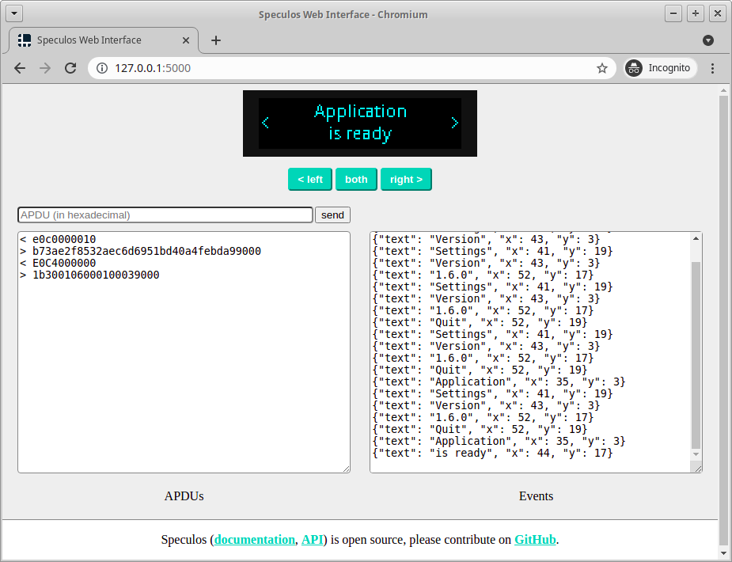

REST API
A REST API is available at http://127.0.0.1:5000 (the port can be changed thanks to --api-port) when speculos is running. The specification of the API can be found at this URL, or from the swagger.io demo website.
This API is meant to be used in test environments to automate actions on the device such as:
Taking screenshot
Pressing buttons
Setting or updating automation rules
etc.
Usage
For instance, pressing the left button is as simple as:
curl -d '{"action":"press-and-release"}' http://127.0.0.1:5000/button/left
and taking a screenshot of the device:
curl -o screenshot.png http://127.0.0.1:5000/screenshot
Web UI
There is a web user interface running directly on http://127.0.0.1:5000, which communicates with the API:
